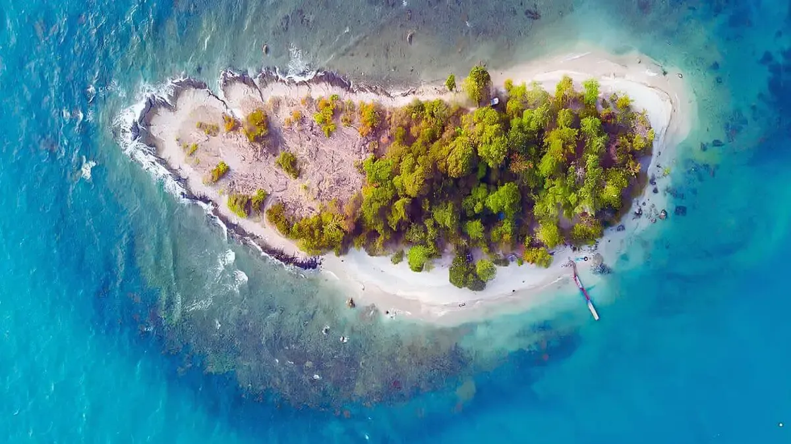
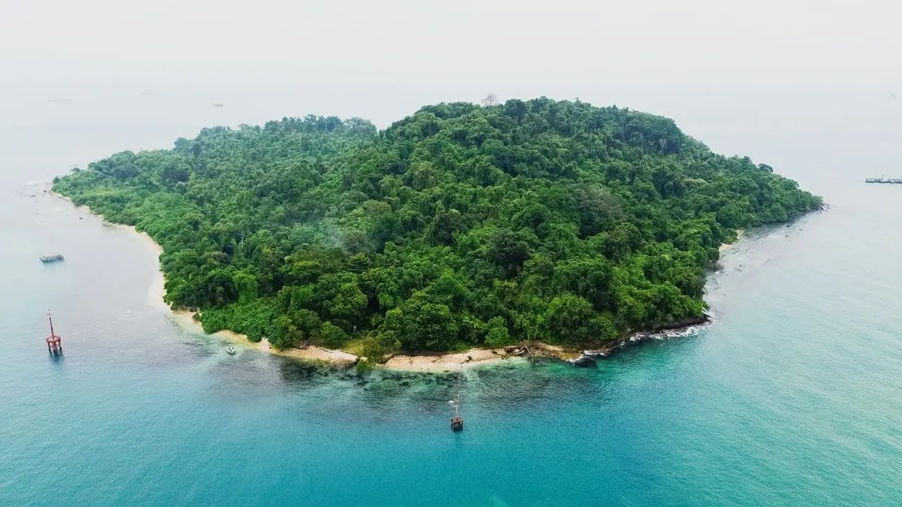
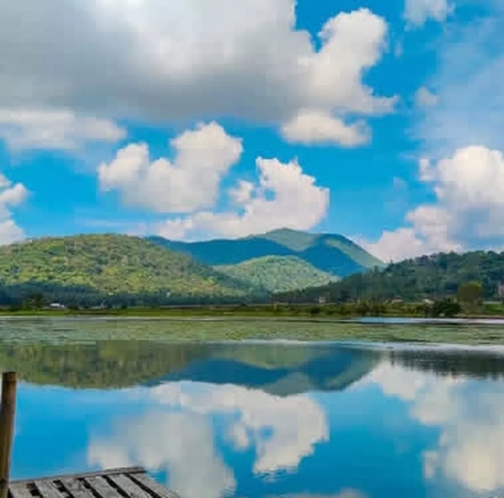
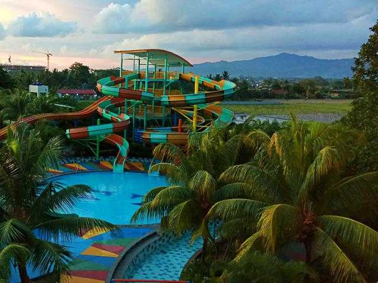

Pulau Merak Kecil
Pulau mungil dengan waktu penyeberangan singkat, populer untuk snorkeling ringan dan menikmati pemandangan Selat Sunda.
Kec. Pulomerak
Dari pulau kecil di Selat Sunda sampai kolam air buatan, berikut destinasi yang mewakili sisi bahari dan rekreasi Kota Cilegon.

Pulau mungil dengan waktu penyeberangan singkat, populer untuk snorkeling ringan dan menikmati pemandangan Selat Sunda.
Kec. Pulomerak

Menawarkan panorama laut lepas serta pemandangan ke arah situs sejarah letusan Krakatau 1883.
Desa Tamansari, Pulomerak

Danau kota yang teduh, cocok untuk bersantai sore hari, memancing, atau sekadar berjalan santai di tepiannya.
Kota Cilegon

Wahana air lengkap untuk keluarga, mulai dari kolam arus hingga berbagai jenis seluncuran.
Jl. Ahmad Yani, Cibeber